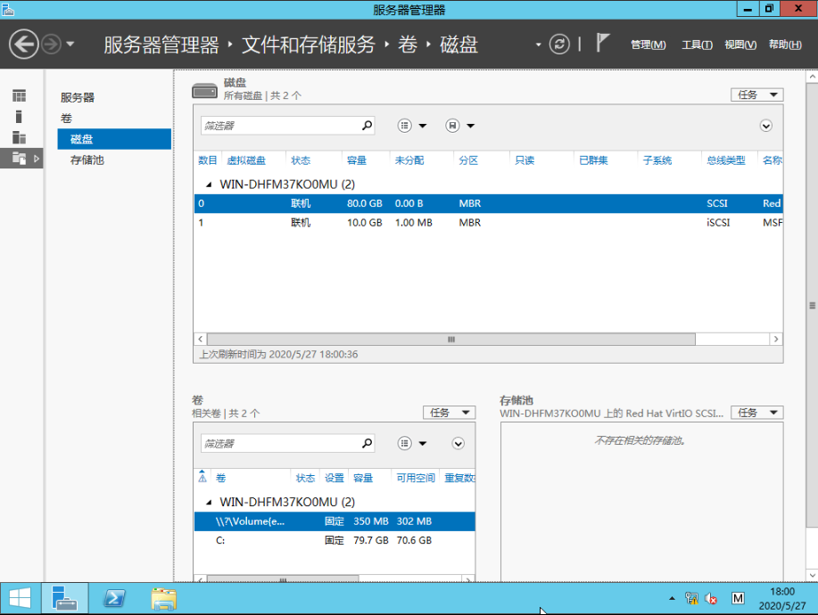

03-Windows Server 2012 R2——多路径配置
实验环境：
H3C CAS 5.0 (E0503)
iSCSI服务器端硬件配置
操作系统：Windows Server 2012 R2
网卡1：10.75.75.54/24
网卡2：10.75.75.55/24
磁盘：80GB
内存：6GB
iSCSI客户端硬件配置
操作系统：Windows Server 2012 R2
网卡1：10.75.75.67/24
网卡2：10.75.75.68/24
磁盘：80GB
内存：6GB
注：无需配置网关和DNS,仅用于存储使用
环境草图
关于部署iSCSI虚拟磁盘请参考《02-Windows Server 2012 R2——部署iSCSI共享磁盘》进行部署，添加访问服务器的客户机的两个IP地址。
1. 配置iSCSI发起程序
打开服务器管理器 >> 工具 >> iSCSI发起程序，在iSCSI发起程序，在目标选项卡中，输入iSCSI服务器的IP地址10.75.75.54，点击“快速连接”，找到目标iSCSI服务器，点击“完成”。在发现选项卡中，可以查看到已经查找到的目标服务器；
添加完两个iSCSI服务器IP地址后，我们在设备管理器中的硬盘驱动器可以看到两块硬盘驱动；
2. 客户机部署iSCSI多路径
打开服务器管理器 >> 添加功能和角色
关于安装类型和服务器选择以及服务器角色，直接点击“下一步”，在功能界面，选择多路径I/O，点击“下一步”；
确认多路径，点击“安装”
3. 配置MPIO
打开服务管理器 >> 工具 >> MPIO
在发现多路径选项卡中，勾选添加对iSCSI设备的支持，点击“添加”，会提示需要重启，点击“是”；
iSCSI客户机重启完成后，查看MPIO属性时，可以看到新增的iSCSI设备信息；
编辑MPIO属性相关信息；打开iSCSI发起程序，选中已发现的目标，点击属性，
添加会话，并在会话中勾选多路径，之后点击“高级”选项;
在高级设置中，修改连接方式，将其配置如下图方式，实际情况按照实际部署而定，这里将10.75.75.67添加到会话中；
再次添加会话，将10.75.75.68添加到会话中，启动多路径；
选中两个刚添加的会话，点击“设备”；
在设备窗口中，点击“MPIO”；
将MPIO策略勾选为“协商会议”，这里的策略根据实际情况选择。
补充说明：
(1)仅故障转移（failover only）
故障转移策略使用一个活动路径并指定所有其他路径为待机状态。在活动路径出现故障时，将采用循环法尝试待机路径，直至找到可用的路径为止。通俗来讲，就是一条路径挂了，切到另一条。它是自动切换，active/standby模式；
(2)协商会议（round robin）
循环策略尝试将传入的请求平均分配到所有处理路径中。这个模式就是负载均衡，每条路径都会写IO，不能浪费服务器性能，active/active模式；
(3)带子集的协商会议
子集循环策略只对指定为活动的路径执行循环策略。在所有活动路径都出现故障时，将采用循环法尝试待机路径。比协商会议更高级一点，储存的三种工作模式中的一种，主要是存储控制那一条路径，而不是客户端。主要是提高存储的读写性能和可靠性。 active/active模式；
允许应用程序指定要以轮循机制方式使用的路径集以及备用路径集的负载平衡策略。DSM 使用来自主路径池的路径处理请求，只要其中至少有一个路径可用即可。仅当所有主路径发生故障时，DSM 才使用备用路径。例如，假设有 4 个路径：A、B、C 和 D，路径 A、B 和 C 被列为主路径，而 D 是备用路径。只要 A、B 和 C 中至少有一个可用，DSM 就会以轮循机制方式从中选择一个路径。如果所有三个路径都发生故障，则 DSM 就使用备用路径 D。如果路径 A、B 或 C 变为可用，DSM 将停止使用路径 D 并切换回使用 A、B 和 C 之中的可用路
(4)最少队列深度
最少队列深度策略通过成比例地将更多的 I/O 请求分配到负载较轻的处理路径来补偿非均匀负载。。例如，考虑有一个 I/O，该 I/O 发送到路径 1 上的 LUN 1，其他 I/O 发送到路径 1 上的 LUN 2。则路径 1 上累积未完成的 I/O 为 2，在路径 2 上它为 0。因此，任一 LUN 的下一个 I/O 将在路径 2 上处理。
(5)加权路径（weighted path）
加权路径策略允许用户指定每个路径的相对处理负载。数字较大说明此路径的优先级很低。沿着当前处理的数据块数最少的路径发送 I/O 的负载平衡策略。例如，如果有两个 I/O：一个是 10 个字节，而另一个是 20 个字节。这两个都在路径 1 上进行处理，并且都已完成路径 2。则路径 1 上累积的未完成 I/O 数量为 30 个字节。在路径 2 上为 0。因此下一个 I/O 将在路径 2 上处理。
4. 挂载并初始化iSCSI硬盘
操作步骤如下：
① 在服务器管理器 >> 文件和存储服务 >> 卷 >> 磁盘路径中，选中iSCSI磁盘，右键，点击“联机”；
②初始化磁盘；
③分配瓷片空间大小和驱动器；
④设置文件系统；
⑤格式化磁盘分区；

5. 检查、测试多路径
检查多路径
配置完对路径和MPIO后，在设备管理器的磁盘驱动器处会发现两个重复磁盘相应地聚合为一个多路径磁盘，在磁盘管理处也显示一块硬盘，跟不启用多路径服务有差异的。

测试iSCSI多路径
测试iSCSI步骤：
⑴ 通过远程桌面连接，远程到iSCSI服务器和iSCSI客户机；
⑵ 将Windows Server 2012 R2的系统ISO镜像拷贝到iSCSI磁盘；
⑶查看iSCSI服务器端、iSCSI客户端性能监视器中各网卡的流量数据；
测试相关数据截图：
iSCSI客户端
iSCSI服务器端
禁止iSCSI服务器端网卡2：:10.75.75.55,客户机的数据截图
禁止iSCSI服务器端网卡2：:10.75.75.55,服务器端的数据截图
恢复iSCSI服务器端网卡2，客户端的数据截图
恢复iSCSI服务器端网卡2，服务器端的数据截图
说明：在其中一块网卡出现故障时，iSCSI多路径会自动转移，但转移期间磁盘会处于挂起状态，此时磁盘不会进行读写操作，整个挂起的时间大概几十秒。
测试结果总结：
数据拷贝过程中，第二、三块网卡的数据流量相对均衡，达到了负载的作用。